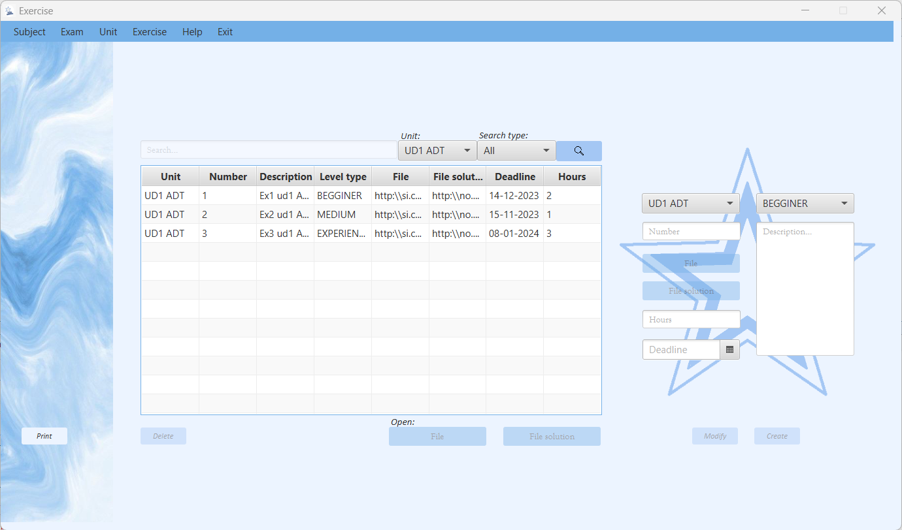
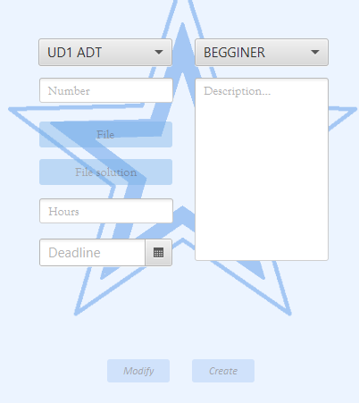
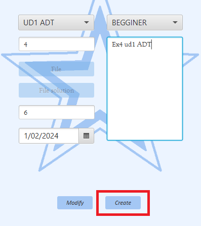
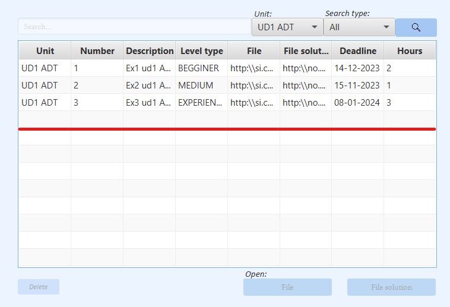
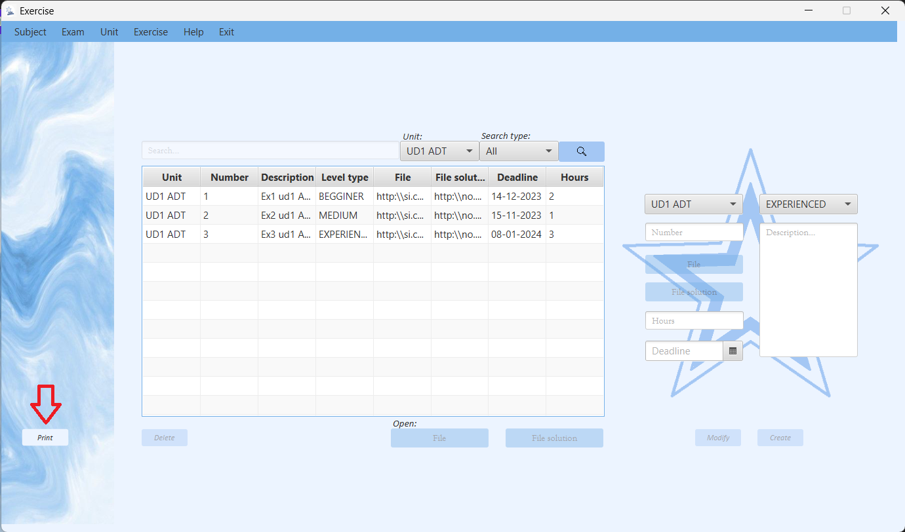

Administrator Management: Exercise Help
Descripción general
Dependiendo del tipo de usuario que inicie sesión en la aplicación podrá hacer una cosa u otra. Si es de tipo profesor, el usuario podrá mediante los controles de los que dispone la ventana crear, modificar, buscar y eliminar los ejercicios de las unidades de las asignaturas de las que se haga cargo. Si es de tipo alumno, el usuario solo podrá buscar los ejercicios de las unidades de las asignaturas en las que este previamente matriculado. Así mismo podrán generar un informe que contiene un listado de los ejercicios con sus correspondientes datos.
Operaciones para profesores
Crear ejerciciosPara crear un ejercicio, tendrá que seleccionar la unidad, el número, las horas que se tarda en hacerlo, la fecha límite, seleccionar la dificultad y la descripción.
Una vez estén todos los campos válidados, el profesor podrá pulsar en el botón de Create.
Si no se produce ningún error, se creará el ejercicio.

Modificar ejercicios
Para modificar un ejercicio deberá seleccionar un ejercicio de la tabla y tendrá que cambiar el campo que quiera y pulsar el botón Modify.
Saldrá una confirmación que le preguntará si quiere modificarlo.
Si es afirmativa y no se produce ningún error se modificará el ejercicio.
Borrar ejercicios
Para eliminar un ejercicio deberá seleccionar el que quiera de la tabla y pulsar en el botón de Delete.
Si no se produce ningún error, se le pedirá una confirmación para borrar el ejercicio deseado.
Si se confirma el borrado se eliminará el ejercicio y se actualizará la tabla que se muestra en la ventana.
Operaciones para profesores y alumnos
Busqueda de ejerciciosPara buscar los datos de un ejercicio primero deberá seleccionar en el combobox de las unidades la unidad de la cual quiera los ejercicios. También tendrá que seleccionar en el combobox llamado search type como quiere buscarlo, si por la fecha, por el tipo de dificultad o por el número de ejercicio. En caso de que el usuario ser un profesor, también tendrá la opción de buscar todos los ejercicios. Cuando ya sepa que quiere buscar, le tendrá que pulsar en el botón de Search. Si no sale ningún error, la tabla se actualizará con los ejercicios que quiere encontrar.

Si no se encuentra, saldra un error de no encontrado.
Imprimir listado de mental disease
Pulsando el botón Print se abrirá una ventana donde puede ver un documento que contiene un listado de los ejercicios que existen en la aplicación. Mediante los botones de la parte superior de la ventana podrá imprimir o almacenar dicho informe.
